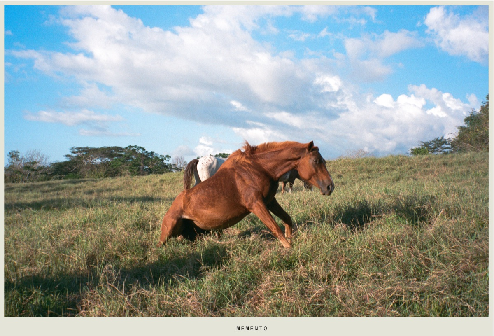

Brian Hansen
Director & Photographer
Imagen luminosa, textura analogica y una mirada cercana al cine documental. Trabajos de direccion, fotografia, video y piezas en 35mm.


35mm book
MEMENTO 35mm
MEMENTO
Una serie 35mm por Brian Hansen
Fragmento visual del libro: una pagina abierta, silenciosa, con fondo hueso, fotografia analogica y texto reducido al minimo.


El resto de la web toma este ritmo: margenes amplios, piezas aisladas, grano visible y una lectura pausada entre cine, foto fija y memoria.
Shortfilms
Narrative pieces
Actor
Selected acting work
Trabajos como actor en una pestaña aparte, separados del portfolio principal de direccion y fotografia para que cada faceta respire con su propio contexto.
Solicitar material actoralBookings and reels